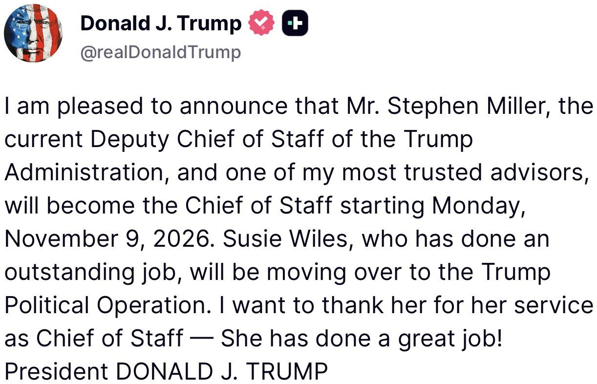
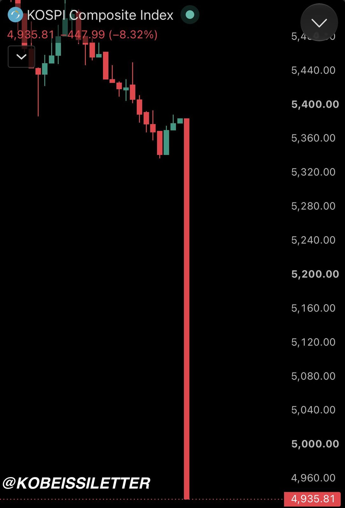
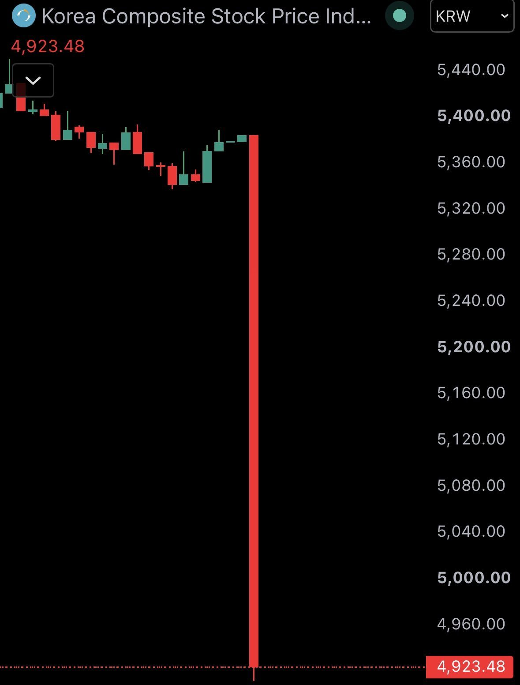
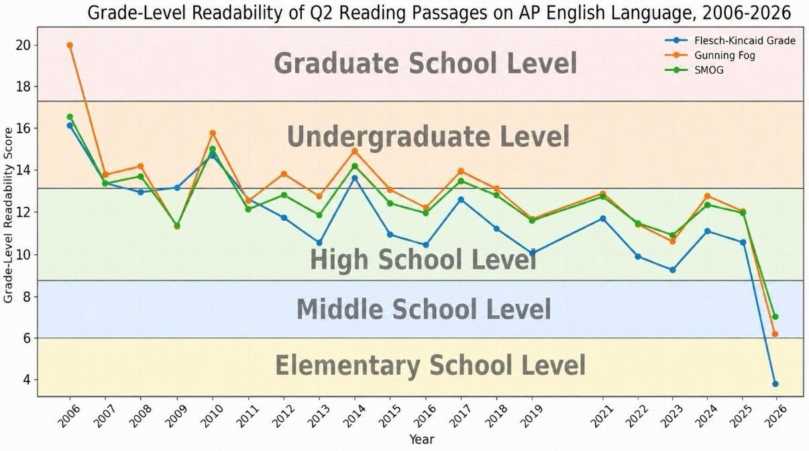
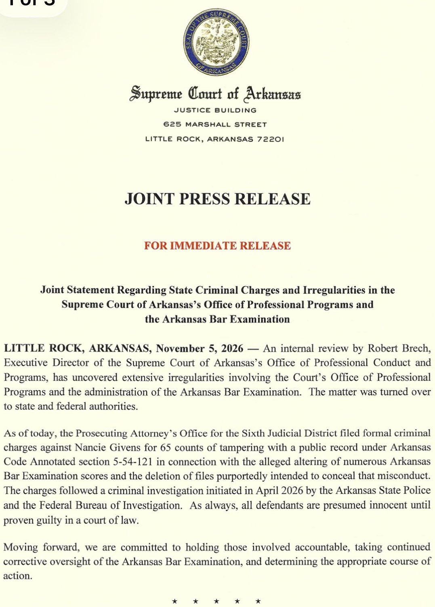
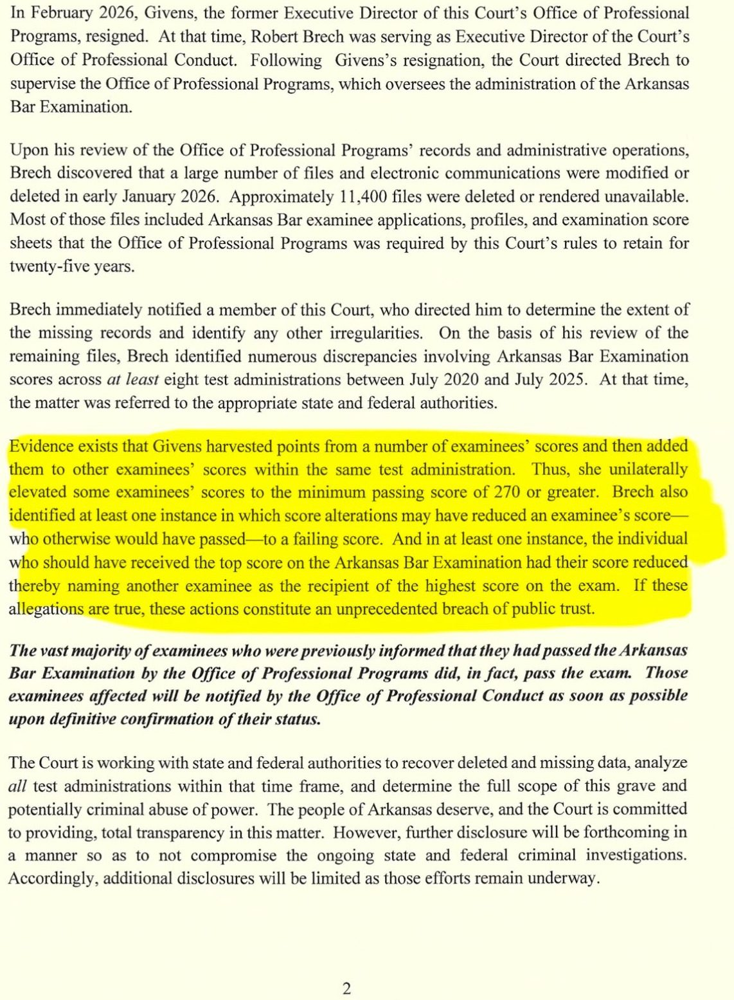

BREAKING: 🇯🇵 Japan briefly halts government bond futures trading after a sharp sell-off.
Japan's 10-year bond yield drops 9.1 basis points to 2.678%.
Every market is crashing all at once.
BREAKING: South Korea’s KOSPI collapses -9%, triggering a trading halt, after opening for the first time since today’s US market decline.
The index is now down -47% from its record high.

JUST IN: 🇰🇷 South Korea's KOSPI stock market crashes 9%, triggering circuit breaker and halting trading.

JUST IN - A widespread outage has disrupted 128 Japanese credit unions (known as shinkin banks) across western Japan, disabling automated teller machines (ATMs) and counter transactions - Bloomberg
#BREAKING: System outage hits Japanese credit unions halting ATM, deposit, withdrawal and transfer services.
Most people do not realize just how easy the AP exams have gotten. They are not college level.
Why/how have they become so easy? What's going on?
This might shock you... A brutal new piece in Education Next just dropped, saying the decline in rigor of the AP in the last two decades is, in large part, because the content has been GUTTED. For example:
— AP Biology cut 40% of its material — Required lines from the Aeneid in AP Latin halved — Spanish Lit reading list cut from 56 works to 38
Then the questions themselves have become absurdly easier. Readability measures show English passages have fallen multiple grade levels, and some now include footnotes defining basic words...
A 2025 AP English prompt included footnote definitions for words like "optimism" and "pessimism."
At the same time, scoring was recalibrated so that more students pass: guessing penalties disappeared, rubrics grew more generous, readers were told to give students the benefit of the doubt, etc. — "no one at College Board had any incentive to maintain rigor."
College professors are now seeing students arrive with AP credit who lack basic content knowledge and writing ability. The College Board insists the exams have not become easier, but everybody familiar with them knows they've become an absolute joke.
Advanced Placement is no longer advanced. This is not college level.
It must be replaced.

I don’t think we’ll fully understand the mental and emotional damage being done to dating, relationships, and marriages until 10–12 years from now. The way people approach love, commitment, trust, and communication is changing right before our eyes. Social media, unrealistic expectations, constant comparison, and the endless feeling that someone better is always one swipe away are having an impact. I think we’re so caught up in what’s happening right now that we haven’t stopped to consider the long-term consequences.
Time will tell just how much damage this era has done to genuine human connection. Social media to the degree we use it was definitely a mistake.
Thanks to America’s unrivaled entrepreneurial spirit and dynamism, the re-industrialization and re-privatization of the American economy are gathering extraordinary force.
Today’s jobs report shows our great American companies have created nearly 400,000 private-sector jobs in the past three months. Manufacturing employment has now risen by over 100,000 in 2026 alone.
We are fundamentally rebalancing the American economy, away from government-led growth and toward private investment, productive employment, and the revival of our industrial base.
BREAKING: Major investors are “increasingly skeptical” that Anthropic’s IPO can proceed at the expected valuation of $1.5 trillion after today’s market drop, per WSJ.
One major investor said Anthropic’s valuation will need to come down to $1 trillion.
This marks a major reversal from the $2+ trillion closing market cap expected by markets just months ago.
Anthropic has been planning to IPO prior to Thanksgiving.
It’s unclear if today’s crash will impact that timeline.
So apparently the Director of Arkansas professional programs has been altering bar examination scores for several years by taking points from some bar examinees and adding them to other bar examinees


President Trump is the most transformative political leader in American History — and he has single-handedly saved America from those who would destroy it.
It has been the privilege of my lifetime to have served on his team from Day One, and I am honored beyond words to serve as his White House Chief of Staff.
I want to thank the incomparable Susie Wiles for her years of devoted service to the President and the Country, and for her friendship.
The mission now is more clear than ever: Fight with all of our soul to support our President and defend this magnificent Republic.
BREAKING: A Venezuelan illegal immigrant accused of threatening to kill President Trump was arrested near the White House after three firearms and ammunition were found inside a stolen vehicle, DHS confirms to Fox News.
Secret Service agents spotted the suspect acting suspiciously along Constitution Avenue. When they approached, DHS says he told them he was hearing voices directing him to Washington to kill the president.
Authorities recovered an AR-15-style rifle, a MAC-10, a Glock 43X and ammunition from the vehicle.
DHS says the suspect illegally crossed the Texas border in March 2024 and was released into the country under the Biden administration. He now faces multiple weapons and vehicle-related charges, while ICE has lodged a detainer.
See the charges and what DHS is revealing about the suspect’s immigration history: https://t.co/G0WlODB8pe
@BillMelugin_
.@POTUS: "There's going to be an agreement. It's going to be a big agreement, and it's going to involve more than Ukraine... I could even say it might involve all of Europe. It's going to be a big, beautiful agreement — and everybody is going to be thrilled."
BREAKING: Iraq has activated nuclear emergency response plans and border radiation monitoring systems along its border with Iran ahead of possible US strikes on Iranian nuclear sites, per Shafaq, citing a statement from Iraq's nuclear regulator.
It comes as Iraq has restricted its airspace for expected combat operations from November 7 to 11.
JUST IN: 🇺🇸 Rule allowing Americans to invest in crypto through their 401(k) retirement plans reaches White House for final review.